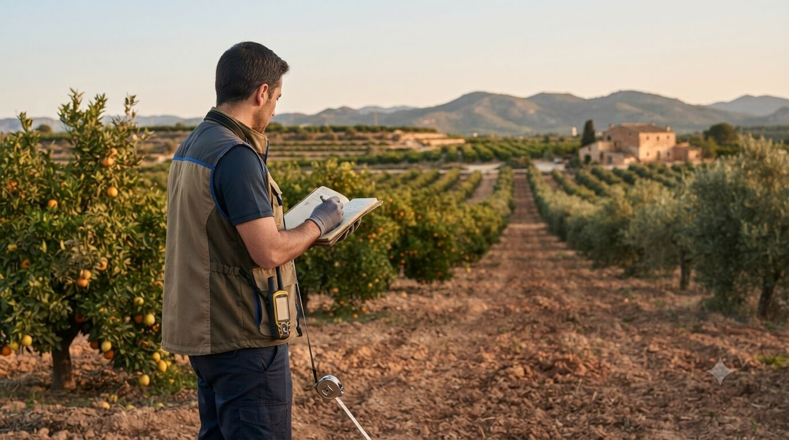

Medio ambiente: impacto ambiental y huella de carbono
Cada vez más proyectos y ayudas exigen acreditar su comportamiento ambiental. Lo convertimos en documentación técnica sólida, no en un trámite más.

Por qué cada vez pesa más lo ambiental
La normativa de edificación rural, las ayudas de la PAC y los fondos europeos ligados a sostenibilidad (PERTE, ecoesquemas, líneas de economía circular) exigen justificar cada vez con más detalle el impacto ambiental de un proyecto y, en muchos casos, cuantificar su huella de carbono. Ya no basta con cumplir; hay que poder demostrarlo con un informe técnico.
Al mismo tiempo, algunas cooperativas y compradores empiezan a pedir esta información como requisito comercial, especialmente en explotaciones orientadas a exportación o a certificaciones de calidad.
Qué incluye el servicio
- Estudios de impacto ambiental para proyectos de construcción rural, transformación de secano a regadío o cambios de uso del suelo.
- Estudios de integración paisajística cuando la normativa municipal o autonómica lo exige.
- Cálculo de la huella de carbono de la explotación (maquinaria, energía, fertilización), con metodología reconocida.
- Plan de reducción de emisiones con medidas priorizadas por coste y ahorro (eficiencia energética, cubiertas vegetales, gestión de restos).
- Apoyo documental para ayudas y fondos condicionados a criterios ambientales o de sostenibilidad.
- Informes técnicos de acompañamiento para certificaciones de sostenibilidad o requisitos de clientes/cooperativas.
Cómo se trabaja
Se parte de una recogida de datos real de la explotación (consumos, insumos, maquinaria, superficies) y, si el proyecto lo requiere, una visita técnica al entorno afectado. A partir de ahí se elabora el estudio o el cálculo correspondiente, con las conclusiones y medidas expresadas en términos que sirvan tanto para la administración como para la propia gestión de la explotación.
🤖 Primera estimación con IA
Antes de encargar un estudio completo, calcula una primera cifra orientativa de la huella de carbono anual de tu explotación.
Probar calculadora de huella de carbonoPreguntas frecuentes
¿Qué proyectos necesitan obligatoriamente un estudio de impacto ambiental?
Depende del tipo, tamaño y ubicación del proyecto (por ejemplo, cambios de uso del suelo o ciertas construcciones agrícolas). Se revisa caso por caso según la normativa autonómica y municipal.
¿Cómo se calcula la huella de carbono de una explotación?
Se tienen en cuenta los consumos de gasóleo agrícola, electricidad y la fertilización nitrogenada, entre otros factores, aplicando una metodología reconocida. La calculadora orientativa de la web da una primera cifra antes de encargar el cálculo completo.
¿Sirve el informe de huella de carbono para solicitar ayudas?
Sí, cada vez más líneas de ayuda y fondos europeos condicionan la concesión a acreditar el comportamiento ambiental o de sostenibilidad del proyecto, y este informe puede aportarse como parte de esa documentación.
¿Este servicio es solo para explotaciones grandes?
No, también lo solicitan pequeñas explotaciones que necesitan justificar sostenibilidad ante cooperativas, certificaciones de calidad o clientes de exportación.